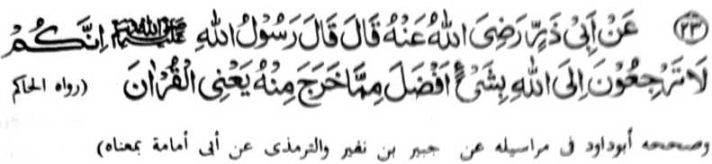
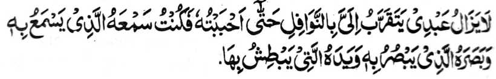
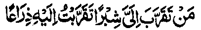

Miyakathitayan ko Hadrat Abu Zar (Radhiallaho ‘Anho) a pitharo iyan a pitharo o Rasulollah (Sallallaho ‘Alaihi wa Sallam), “Mata-an a sekano na di kano den makarani ko Allah a nggolalan ko apiya antona-a nganin a ba baniyan kalawani so nganin a miyakapo-on Rekaniyan, ma-ana so Qur’an.”
Marayag ko kiya-aloy niyan ko madakel a Hadith a daden a taralebi a okit a iphakarani ko Allah a ba niyan kalawani so kapembatiya-a ko Qur’an.
So Imam Ahmad ibn-e-Hambal (Rahmatullahi ‘Alaihi) na pitharo iyan, “Miya-ilay aken so Allah si-i ko taginepen aken na ini-iza aken Non o antona-ai taralebi a okit a iphakarani Rekaniyan. Pitharo o Allah, ‘Hay Ahmad! So Katharo Aken (ma-ana so Qur’an).’ Ini-iza aken Non peman o ba so kapembatiya-aon a rakhes o ma-ana niyan, o di na so kapembatiya-aon apiya di zaboten so ma-ana niyan. Pitharo o Allah, ‘Melagid o pezabota so ma-ana niyan antawa-a ka di, na palayaden iphakarani Raken.’”
So kababaloy o kapembatiya-a ko Qur’an a taralebi okit a iphakarani ko Allah na inosay ko tapsir o Maulana Shah Abdul ‘Aziz Dehlvi [Nawwar-Allaho Marqadaho (Lindawan o Allah so Qobor iyan)], a isa sekaniyan a mala-i sabot ko kiyapakaged-ged [o manga Hadith]. Aya onayan niyan na so ‘Suluk-ela-Allah’ [okit o manga Auliya] a isa a ipembetho ron na ‘Martabe Ihsan’ [piphangka-pangkatan o karani ko Allah] na khakowa o telo a okit:
Sabap sa kagiya giyangkoto a paganay a okit na taden-tadem a mo-okit ko poso, na mimbaloy baden a dowa a okit: Paganay ron na so taden-tadem a mokit ko poso ago so katharo, na ika dowa na so kapembatiya-a ko Qur’an.
Aya ma-ana o Dhikr na so katharo a maka-aantap ko Allah na lalayon gi-i khaso-kasowin. So gi-i ron kakhaso-kasoya na pephaka-ogop ko ‘Mudrakah’ [so kapekha-aden o sabot] kapekha-satiman o pamikiran maka-antap ko tao a pethademan. Aya onga niyan na so kakhagedama sa lagid o makamamasa angkoto a tao [a pethademan]. So katatap sangka-iya a ola-ola na aya ipembetho ron na ‘ma’iyat’ [ka-aden o tarotop a kapagepeda], a aya ma-aantap angka-iya a Hadith a phakatondog si-i:

“Diden kharintas so oripen Aken ko kapephakarani niyan Raken a nggolalan ko manga [simba a] nawafil [manga sunnat] taman sa kababaya-an Aken sekaniyan, na Saken-i mabaloy a tangila niyan a gi-i niyan ipamamakineg, go mata niyan a gi-i niyan ipangilay-lay, go lima niyan a gi-i niyan ipangawa-kawa, go manga a-i niyan a iphelalakao niyan...”
Aya ma-ana niyan na igira so tao, sabap ko kitaralo o simba, na gi-i mbaloy a pekhababaya-an o Allah, na so Allah a aya somisiyap ko langowan o anggaota o lawas iyan sa so manga mata niyan, so manga tangila niyan, go so manga ped iyan, na langon miphasiyonot ko Kabaya Iyan. Giyangka-iya a mapiya na miya-aloy a aya onga o katatatap o manga Sambayang a Sunnat, sabap sa so Paralo a manga Sambayang na mapepento a go di khapakay o ba kalawani [sa kadakel], na so kapakarani ago lalayon kitotompok na aya sarat iyan na so katatap ago katetekhes, sa lagid o kiya-aloy niyan kagiya.
Ogaid na giyangka-iya okit a kambanoga ko kapakarani na pantag bo ini ko Sekaniyan a Soti ago Pekhababaya-an [Allah], go di khaparo so kazinganina ko kapakarani ko apiya antawa-a a giyabo a gi-i khaso-kasoya ko ingaran niyan. Aya sabapa-i na so sekaniyan a gi-i zinganinen so kapakarani ron na dowa a sipat iyan:
Sabap sa giyangka-iya a dowa sipat na ayabo a makatatangan non na so Allah, na giyangkanan a miya-aloy a manga okit o kazinganin sa kapakarani na Ron bo mapapatot. Giyangka-iya a kha-aloy a Hadith-e-Qudsi [katharo o Allah a inaloy o Rasulollah (Sallallaho ‘Alaihi wa Sallam)] na mitotoro iyan angkanan a osayan:

“...sa makarani Raken sa sarangao na miseg Ako ron sa repeng a barokan, na sa makarani Raken sa repeng a barokan na miseg Ako ron sa sarepa, na sa somong Raken a phelalakao na alaon Aken a palalagoy...”
Giyangka-iya a ibarat na pantag bo ini sa osayan. O kena ba pantag bo sa osayan, na so Allah na kena ba kailangan sa kalalakao o di na kapalalagoy. Aya ma-ana niyan na so langon a pethadem ago pephakarani si-i Rekaniyan na pethabangan ago sisiyapen siran o Allah si-i ko takes a kalalawanan so madadalem kiran a panamar ago panagontaman. Aya sabapa-i na kagiya giya-i domada-it ko kala Iyan-i Gagao. Sabap ro-o, na so kaphantang o manga tao a pephakatadem Rekaniyan na aya okit iyan na katetekhes o ni-at na aya khaoriyan non na so kapakatoron o limo o Allah, a Maporo.
So Qur’an na langon taden-tadem ko Allah, sabap sa daden a Ayaat ko Qur’an a ba di kapapadalemi sa taden-tadem ago inengka ko Allah, na sabap san na miya-awidan niyan so wara-an o zikr sa lagid o kiya-aloya-on kagiya. Aden pen a isa a kibibida o Qur’an, a pekhasabapan sa gi-i kapagomareg o kapephakarani ko Allah, na giya-i: so omani isa a katharo-on na ka-aawidan niyan so manga sipat ago kala-i kapa-ar o gi-i tharo.
Marayag a igira pembatiya-an so manga bayok o manga baradosa na pephakararad sa marata ago igira inaloy so manga katharo o manga barasimba a manga tao na aya onga niyan na mapiya. Giya-i sabap a so kitaralo a gi-i kapaganada ko manga kapagongangen na phagonga sa katakabor ago kapangimporo-an, go so kitaralo a gi-i kapaganada ko ‘Ilmo ko Hadith na phagonga sa kapangalimbaba-an. Makimpen so basa a English ago so basa a Persia na melagid, ogaid na mbida a gi-i ran kaperarad ko manga pembatiya sabap ko kiyapaka-mbidabida o paratiyaya ago paparangayan o langona gi-i manorat [sa kitab].
Aya oriyana-i na khapakay a tharo-on a so lalayon kapembatiya-a ko Qur’an na aya iphagonga niyan na so pembatiya na pekhararadan o manga sipat o Pho-onan niyan [so Allah] ago pekhalayam siran non. Opama ka aden a tao a pekhababaya-an niyan so inizorat o isa a panonorat, na pekhapanagombalay so babaya iyan [a panonorat] sangkoto a tao. Giyoto mambo-i sabap a so pembatiya sa Qur’an na makasasarig sa kakhakowa-a niyan ko mala a gagao o Allah, a giyoto peman-i a pephaka-ogop sa kapakarani si-i Rekaniyan. Ikalimo tano o Allah.